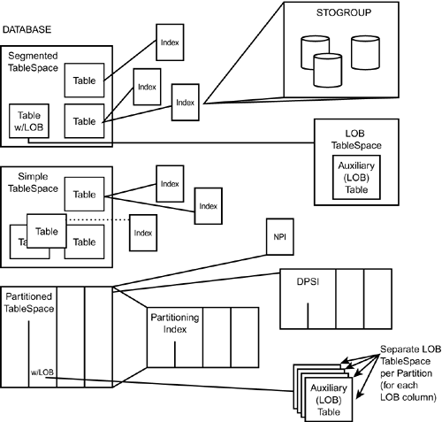
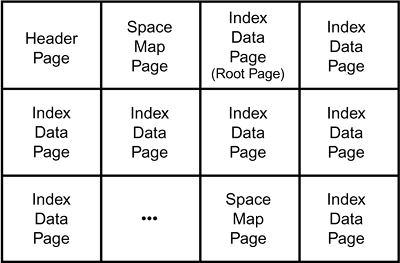
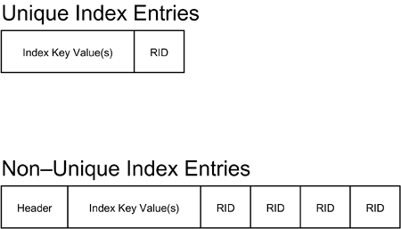

|
|
< Day Day Up > |
|
The Physical Storage of DataThe first segment of your journey behind the scenes of DB2 consists of learning the manner in which DB2 data is physically stored. Before you proceed, however, recall the types of DB2 objects: storage groups (or STOGROUPs), databases, table spaces, tables, and indexes. Refer to Figure 20.1. A database can be composed of many table spaces, which in turn can contain one or more tables, which in turn can have indexes defined for them. Figure 20.1. DB2 database objects.When LOB data types are used, LOB table spaces are required. In addition, databases, table spaces, and indexes can all be assigned STOGROUPs. Of these five objects, only three represent actual physical entities. STOGROUPs represent one or more physical DASD devices. Table spaces and indexes relate to physical data sets. But tables and databases have no actual physical representation. A table is assigned to a table space, and one table space can have one or multiple tables assigned to it. Table spaces are created within a database; one database can have multiple table spaces. Any tables created in a table space in the database, and the indexes on that table, are said to be in the database. But the mere act of creating a database or creating a table does not create a physical manifestation in the form of a data set or disk usage. NOTE A DBD is created by DB2 for databases. The DBD is a component that is managed in the EDM pool and contains the structure of the database objects in that database. It is used by DB2 to help access the objects assigned to the database. DB2 Physical CharacteristicsThere are a myriad of things that go on behind the scenes in DB2 as you create and access database structures. The following sections contain descriptions and guidelines regarding the physical implementation and control of DB2 objects. The Identifiers: OBIDs, PSIDs, and DBIDsWhen an object is created, DB2 assigns it an identifier that is stored in the DB2 Catalog. These identifiers are known as OBIDs. Furthermore, table spaces and index spaces are assigned PSIDs, otherwise known as page set IDs, because these objects require a physical data set. Databases are assigned DBIDs. DB2 uses these identifiers behind the scenes to distinguish one DB2 object from another. Storage GroupsYou can assign up to 133 DASD volumes to a single STOGROUP. The practical limit, though, is far fewer. To ease administration and management, keep the number of volumes assigned to a STOGROUP to a dozen or so. You can use a DB2 STOGROUP to turn over control to SMS. This is accomplished by specifying an asterisk as the volume when creating the DB2 storage group. VSAM Data SetsData sets used by DB2 can be either VSAM entry-sequenced data sets (ESDS) or VSAM linear data sets (LDS). Linear data sets are more efficient because they do not contain the VSAM control interval information that an ESDS does. Additionally, an LDS has control intervals with a fixed length of 4,096 bytes. Data Sets for Non-Partitioned ObjectsUsually only one VSAM data set is used for each non-partitioning index, simple table space, and segmented table space defined to DB2. But, each data set can be no larger than 2 gigabytes. When the 2-gigabyte limit is reached, a new VSAM data set is allocated. DB2 can use as many as 32 VSAM data sets per object. Recall from Chapter 5, "Data Definition Guidelines," the data set naming standard that is used by DB2 for table space and index data sets: vcat.DSNDBx.dddddddd.ssssssss.y0001.znnn where:
The instance qualifier normally will be I0001. However, if you run REORG with the FASTSWITCH YES option, the instance qualifier will switch back and forth between I0001 and J0001 after reorganizing.
For simple and segmented table spaces, the data set number is always preceded by A. The data set number for the first data set is always A001. When the size of the data set for a simple or a segmented table space approaches the maximum, another data set will be defined (for STOGROUP-controlled objects) with the data set number set to A002. For user-defined VSAM data sets, the DBA will have to allocate the data set using A002 as the data set number. The next data set will be A003, and so on. Data Sets for Partitioned ObjectsMultiple VSAM data sets are used for partitioned table spaces, partitioning indexes, and DPSIs. One data set is used per partition. For partitioned table spaces, the data set number is used to indicate the partition number.
If the partition number is less than 1000, the data set number is Annn. For example, the data set number for partition 750 would be A750. For partitions 1000 to 1999, the data set number is Bnnn. For example, the data set number for partition 1025 would be B025, and so on. The same rules apply to the naming of data sets for partitioned indexes. The maximum size of each data set is based on the number of defined partitions. If the partitioned table space is not defined with the LARGE parameter, and the DSSIZE is not greater than 2GB, the maximum number of partitions is 64 and the maximum size per partition is as follows:
NOTE Recall from Chapter 5 that the DSSIZE parameter is used to specify the maximum size for each partition of partitioned and LOB table spaces. Valid DSSIZE values are 1GB, 2GB, 4GB, 8GB, 16GB, 32GB, or 64GB. To specify a DSSIZE greater than 4GB, you must be running DB2 with DFSMS V1.5, and the data sets for the table space must be associated with a DFSMS data class defined with extended format and extended addressability. DFSMS's extended addressability function is necessary to create data sets larger than 4GB in size. If the partitioned table space is defined with the LARGE parameter, the maximum number of partitions is 4096 and the maximum size per partition is 4GB. If the partitioned table space is defined with a DSSIZE greater than 2GB, the maximum size per partition is 64GB, but it depends on the page size, too. With a DSSIZE of 4GB and a page size of 4K, you can define up to 4096 partitions, but with a DSSIZE of 64GB the maximum number of partitions using 4K pages is 256. Data Sets for LOB Table SpacesFor LOB data, up to 127TB of data per LOB column can be stored (using 254 partitions). If DSSIZE is not specified for a LOB table space, the default for the maximum size of each data set is 4GB. The maximum number of data sets is 254. For more information on LOBs, refer to Chapter 9, "Large Objects and Object/Relational Databases." The Structure of a PageNow that you know how data sets are used by DB2, the next question is likely to be "How are these data sets structured?" Every VSAM data set used to represent a DB2 table space or index is composed of pages. Up through V7, DB2 is limited to using pages that consist of 4,096 bytes, or 4KB. Actually, even for DB2 V8, the vast majority of all DB2 table spaces and indexes will use 4K pages. You therefore can think of a data set used by DB2 table spaces or indexes as shown in Figure 20.2. Figure 20.2. DB2 uses data sets with 4KB pages.But what about table spaces with larger page sizes? As you might recall, DB2 table spaces can have page sizes of 4KB, 8KB, 16KB, or 32KB. Up through V7, DB2 groups 4KB pages together to create virtual page sizes greater than 4KB. For example, a table space defined with 32KB pages uses a logical 32KB page composed of eight physical 4KB pages, as represented in Figure 20.3. A table space with 32KB pages is physically structured like a table space with 4KB pages. It differs only in that rows of a 32KB page table space can span 4K pages, thereby creating a logical 32KB page. Figure 20.3. 32KB pages are composed of eight 4KB pages.DB2 Page TypesDB2 uses different types of pages to manage data in data sets. Each type of page has its own purpose and format. The type of page used is based on the type of table space or index for which it exists and the location of the page in the data set defined for that object. Before proceeding any further, I must introduce a new term, page set, which is a physical grouping of pages. Page sets come in two types: linear and partitioned. DB2 uses linear page sets for simple table spaces, segmented table spaces, and indexes. DB2 uses partitioned page sets when it implements partitioned table spaces. Each page set is composed of several types of pages, as follows.
Figure 20.4 shows the basic layout of a DB2 table space. Figure 20.4. DB2 table space layout.
The header page contains control information used by DB2 to manage and maintain the table space. For example, the OBID and DBID (internal object and database identifiers used by DB2) of the table space and database are maintained here, as well as information on logging. Each linear page set has one header page; every partition of a partitioned page set has its own header page. The header page is the first page of a VSAM data set and can occur only once per page set. Space map pages contain information pertaining to the amount of free space available on pages in a page set. A space map page outlines the space available for a range of pages. Refer to Figure 20.5 for the number of pages covered by a space map page based on the type of table space. More than one space map can exist per page set. Figure 20.5. Number of pages per space map page.Dictionary pages are used for table spaces that specify COMPRESS YES. Information is stored in the dictionary pages to help DB2 control compression and decompression. The dictionary pages are stored after the header page and first space map page, but before any data pages. NOTE Each table space or table space partition that contains compressed data has a compression dictionary that is used to control compression and decompression. The dictionary contains a fixed number of entries, up to a maximum of 4096. The dictionary content is based on the data at the time it was built, and it does not change unless the dictionary is rebuilt or recovered, or compression is disabled using ALTER with COMPRESS NO. System pages are new as of DB2 V8 and contain information about the version of the object and hence the structure of its rows, as well as other system-related details. Data pages contain the user data for the table space or index page set. The layout of a data page depends on whether it is an index data page or a table space data page. Table Space Data PagesEach table space data page is formatted as shown in Figure 20.6. Each page begins with a 20-byte header that records control information about the rest of the page. For example, the header contains the page set page number, pointers to free space in the page, and information pertaining to the validity and recoverability of the page. Figure 20.6. Table space data page layout.At the very end of the page is a 1-byte trailer used as a consistency check token. DB2 checks the value in the trailer byte against a single bit in the page header to ensure that the data page is sound. DB2 ensures that these two bits are the same when the page is read. The next-to-last byte of each page contains a pointer to the next available ID map entry. The ID map is a series of contiguous 2-byte row pointers. One row pointer exists for every data row in the table. A maximum of 255 of these pointers can be defined per data page. The maximum number of rows per page can be specified for each table space using the MAXROWS clause. Each row pointer identifies the location of a data row in the data page. Each data page can contain one or more data rows. One data row exists for each row pointer, thereby enforcing a maximum of 255 data rows per data page. Each data row contains a 6-byte row header used to administer the status of the data row. LOB PagesLOB columns are stored in auxiliary tables, not with the primary data. An auxiliary table is stored in a LOB table space. For complete details on large object support, refer to Chapter 9. The layout of data pages in a LOB table space differs from a regular DB2 table space. There are two types of LOB pages:
LOB map pages contain information describing the LOB data. A LOB map page always precedes the LOB data. Figure 20.7 describes the LOB map page. There are potentially five components of the LOB map page. Figure 20.7. LOB map page layout.The LOB map page header connects the LOB page with the base table. The LOB map entries point to the page number where LOB data exists, as well as containing information about the length of the LOB data. The final two components of the LOB map page exist only when the LOB map page also contains LOB data. The LOB map page data header, LOB data, and page trailer exist when the last LOB map page contains LOB data. The LOB data page contains the actual LOB data. The layout of a LOB data page is depicted in Figure 20.8. Figure 20.8. LOB data page layout.Index PagesThe data pages for a DB2 index are somewhat more complex than those for a DB2 table space. Before you delve into the specifics of the layout of index data pages, you should examine the basic structure of DB2 indexes. A DB2 index is a modified b-tree (balanced tree) structure that orders data values for rapid retrieval. The values being indexed are stored in an inverted tree structure, as shown in Figure 20.9. Figure 20.9. DB2 index structure.As values are inserted and deleted from the index, the tree structure is automatically balanced, realigning the hierarchy so that the path from top to bottom is uniform. This realignment minimizes the time required to access any given value by keeping the search paths as short as possible. Every DB2 index resides in an index space. When an index is created, the physical space to hold the index data is automatically created if STOGROUPs are used. This physical structure is called the index space. Refer to Figure 20.10 for a depiction of the layout of an index space. Figure 20.10. DB2 index space layout. Index data pages are always 4KB in size. To implement indexes, DB2 uses the following types of index data pages:
The pointers in the leaf pages of an index are called a record ID, or RID. Each RID is a combination of the table space page number and the row pointer for the data value, which together indicate the location of the data value. Figure 20.11. Index space map page layout.NOTE A RID is a record ID, not a row ID as is commonly assumed. A DB2 record is the combination of the record prefix and the row. Each record prefix is 6 bytes long. RIDs point to the record, not the row; therefore, a RID is a record ID. But don't let this information change the way you think. The data returned by your SELECT statements are still rows! The level of a DB2 index indicates whether it contains non-leaf pages. The smallest DB2 index is a two-level index. A two-level index does not contain non-leaf pages. The root page points directly to leaf pages, which in turn point to the rows containing the indexed data values. A three-level index, such as the one shown in Figure 20.9, contains one level for the root page, another level for non-leaf pages, and a final level for leaf pages. The larger the number of levels for an index, the less efficient it will be. You can have any number of intermediate non-leaf page levels. The more levels that exist for the index, the less efficient the index becomes, because additional levels must be traversed to find the index key data on the leaf page. Try to minimize the number of levels in your DB2 indexes; when more than three levels exist, indexes generally start to become inefficient. Type 1 Index Data PagesType 1 indexes are DB2's legacy index type. These are the indexes that were available with DB2 since V1. They started to be called Type 1 indexes with the introduction of DB2 V4, which added a new type of index (Type 2 indexes). As of V6, DB2 uses only Type 2 indexes. Type 1 indexes are no longer supported. CAUTION
However, if you are using a past release of DB2 and want to read more about Type 1 indexes, refer to the CD accompanying this book, where you can find a file containing a section from a previous edition of this book covering Type 1 indexes. Type 2 Index Data PagesNon-leaf pages are physically formatted as shown in Figure 20.12. Each non-leaf page contains the following:
Figure 20.12. Type 2 index non-leaf page layout.Each non-leaf page contains high keys with child page pointers. The last page pointer has no high key because it points to a child page that has entries greater than the highest high key in the parent. Additionally, Type 2 index non-leaf pages deploy suffix truncation to reduce data storage needs and increase efficiency. Suffix truncation allows the non-leaf page to store only the most significant bytes of the key. For example, consider an index in which a new value is being inserted. The value, ABCE0481, is to be placed on a new index page. The last key value on the previous page was ABCD0398. Only the significant bytes needed to determine that this key is new need to be stored—in this case, ABCE. NOTE In the older, Type 1 indexes, the entire length of each key was stored. Truncation helps to reduce index size, thereby possibly reducing the number of index levels and incurring less I/O. Entries on a Type 2 leaf page are not stored contiguously in order on the page. A collated key map exists at the end of the Type 2 leaf page to order the entries. Type 2 index leaf pages are formatted as shown in Figure 20.13. When an entry is added to the index, the collated key map grows backward from the end of the page into the page. By traversing the key map within the page, DB2 can read entries in order by the index key. Additionally, Type 2 indexes have no subpages. Figure 20.13. Type 2 Index leaf page layout.Type 2 leaf page entries add a flag byte. The flag byte indicates the status of the RID. The first bit indicates whether the RID is pseudo-deleted. A pseudo-delete occurs when a RID has been marked for deletion. The second bit indicates that the RID is possibly uncommitted, and the third bit indicates that a RID hole follows. An array of RIDs is stored contiguously in ascending order to allow binary searching. For non-unique indexes, each index entry is preceded by a count of the number of RIDs. NOTE Type 2 indexes will need to be reorganized periodically to physically delete the pseudo-deleted RIDS. Information about pseudo-deleted RIDs can be found in the DB2 Catalog in SYSIBM.SYSINDEXPART and in the Real Time Statistics tables. Consider tracking the historical size of indexes for those that are larger than normal and thus, candidates for reorganization. The final physical index structure to explore is the index entry. You can create both unique and non-unique indexes for each DB2 table. When the index key is of varying length, DB2 pads the columns to their maximum length, making the index keys a fixed length. A unique index contains entries, and each entry has a single RID. In a unique index, no two index entries can have the same value because the values being indexed are unique (see Figure 20.14). Figure 20.14. Index entries. You can add the WHERE NOT NULL clause to a unique index causing multiple nulls to be stored. Therefore, an index specified as unique WHERE NOT NULL has multiple unique entries and possibly one non-unique entry for the nulls. If the index can point to multiple table rows containing the same values, however, the index entry must support a RID list. In addition, a header is necessary to maintain the length of the RID list. This type of index entry is shown in Figure 20.9. The Storage Impact of Type 2 IndexesType 2 indexes provide numerous benefits to a DB2 subsystem. The primary benefit is the elimination of index locking. However, many newer DB2 features, such as row level locking and uncommitted reads, require Type 2 indexes. Type 1 indexes were no longer supported as of DB2 V6, but DB2 would continue to operate if Type 1 indexes still exist. You cannot migrate to DB2 V8 without dropping or converting all of your Type 1 indexes. So, you are now forced to move to Type 2 indexes. If you have already migrated your Type 1 indexes to Type 2, you can ignore the rest of this short section. Otherwise, be sure you understand all of the storage ramifications of converting to Type 2 indexes. What will the impact of Type 2 indexes be with regard to storage requirements? The answer, not surprisingly, is "it depends!" There are quite a few differences between Type 1 and Type 2 indexes that impact storage. The first difference is in the amount of useable space on an index page. A Type 2 leaf page has 4038 bytes of useable space; a Type 2 non-leaf page has 4046 bytes. Type 1 leaf and non-leaf pages have 4050 useable bytes per page. So, Type 2 indexes have less useable space per page. Additionally, Type 2 indexes require an additional one-byte RID prefix in addition to the four-byte RID found in both Type 1 and Type 2 indexes. The new one-byte RID prefix found in a Type 2 index contains three flags: pseudo-deleted, possibly uncommitted, and RID hole follows. Because Type 2 indexes have a different internal structure, two pieces of header information needed on Type 1 indexes are no longer required: the subpage header and the non-unique key header. Because Type 2 indexes do not use subpages, the 17-byte logical subpage header required of a Type 1 index is not in Type 2 indexes. Non-unique Type 1 indexes have a six-byte header and will repeat an entry (header and key) if a key has more than 255 RIDs. Type 2 indexes have a two-byte header and can have more than 255 RIDs in each entry. The entry is only repeated if there is not enough room in a leaf page to hold all of the RIDs; the same is true for a Type 1 index. Type 2 indexes also have a two-byte MAPID for each key at the end of the page, so total savings per key is two bytes (six bytes for the Type 1 header, minus two bytes for the Type 2 header and two bytes for the MAPID). Type 2 indexes store truncated keys instead of the complete key. Only the portion of the key required to make it uniquely identifiable is stored on non-leaf pages. However, if there are many duplicate keys so that the same key is on more than one leaf page, a Type 2 index will have RIDs stored in the non-leaf pages, causing more space to be used instead of less. This is due to Type 2 indexes keeping the RIDs in sequence. Finally, Type 2 indexes are required for LARGE table spaces (that is, DSSIZE greater than 2GB). In this case, the RID is five bytes (plus the one-byte RID prefix, which is still required). As you can see, there is no clear-cut answer as to whether a Type 1 or Type 2 index will utilize more storage. Taking all these points into consideration, here are some general rules of thumb on index storage requirements that you can apply when developing DB2 databases:
Be sure to factor all of these issues into your index storage requirement exercises. Record IdentifiersA RID is a 4-byte record identifier that contains record location information. RIDs are used to locate any piece of DB2 data. For large partitioned table spaces, the RID is a 5-byte record identifier. The RID stores the page number and offset within the page where the data can be found. For pages in a partitioned table space, the high-order bits are used to identify the partition number. Now that you know the physical structure of DB2 objects, you can explore the layout of DB2 itself. |
|
|
< Day Day Up > |
|